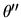
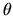
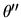
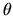

As in the standard nonsymmetric eigenvalue problem (section 4.8.1.2), two preprocessing steps may be performed on the input matrix pair (A, B). The first one is a permutation, reordering the rows and columns to attempt to make A and B block upper triangular, and therefore to reduce the order of the eigenvalue problems to be solved: we let (A',B') = P1 (A, B) P2, where P1 and P2 are permutation matrices. The second one is a scaling by two-sided diagonal transformation D1 and D2 to make the elements of A''= D1 A' D2 and B'' = D1 B' D2 have magnitudes as close to unity as possible, so as to reduce the effect of the roundoff error made by the later algorithm [100]. We refer to these two operations as balancing.
Balancing is performed by driver xGGEVX, which calls computational routine xGGBAL. The user may choose to optionally permute, scale, do both or do either; this is specified by the input parameter BALANC when xGGEVX is called. Permuting has no effect on the condition numbers or their interpretation as described in the previous subsections. Scaling does, however, change their interpretation, as we now describe.
The output parameters of xGGEVX - ILO(integer), IHI(integer), LSCALE(real array of length N), RSCALE(real array of length N), ABNRM(real) and BBNRM(real) - describe the result of balancing the matrix pair (A, B) to (A'',B''), where N is the dimension of (A,B). The matrix pair (A'',B'') has block upper triangular structure, with at most three blocks: from 1 to ILO-1, from ILO to IHI, and from IHI+1 to N (see section 2.4.8). The first and last blocks are upper triangular, and so already in generalized Schur form. These blocks are not scaled; only the block from ILO to IHI is scaled. Details of the left permutations (P1) and scaling (D1) and the right permutations (P2) and scaling (D2) are described in LSCALE and RSCALE, respectively. (See the specification of xGGEVX or xGGBAL for more information). The one-norms of A'' and B'' are returned in ABNRM and BBNRM, respectively.
The condition numbers
described in earlier subsections are computed
for the balanced matrix pair (A'',B'') in xGGEVX, and so
some interpretation is needed to apply them to the eigenvalues
and eigenvectors of the original matrix pair (A, B).
To use the bounds for eigenvalues in Tables 4.7 and 4.8,
we must replace  by
.
To use the bounds for eigenvectors, we also need to take
into account that bounds on rotation of the right and left eigenvectors
are for the right and left eigenvectors x'' and y'' of
A'' and B'', respectively, which are related to
the right and left eigenvectors x and y by
x'' = D-12 PT2 x and
y'' = D-11 P1 y,
or
x = P2 D2 x'' and
y = PT1 D1 x'' respectively.
Let 
be the bound on the rotation of x''
from Table 4.7 and Table 4.8 and
let 
be the desired bound on the rotation of x. Let
by
.
To use the bounds for eigenvectors, we also need to take
into account that bounds on rotation of the right and left eigenvectors
are for the right and left eigenvectors x'' and y'' of
A'' and B'', respectively, which are related to
the right and left eigenvectors x and y by
x'' = D-12 PT2 x and
y'' = D-11 P1 y,
or
x = P2 D2 x'' and
y = PT1 D1 x'' respectively.
Let 
be the bound on the rotation of x''
from Table 4.7 and Table 4.8 and
let 
be the desired bound on the rotation of x. Let
The numerical example in section 4.11 does no scaling, just permutation.